Team 33: Anthony Patitucci, Charlie Zhang, Dani Swords, Rahul Desai
The refraction of light through water can result in very interesting optical effects that are essential to model in order to render realistic looking water scenes. For our project, we aimed to render realistic lighting effects for scenes involving water such as the caustic patterns that we commonly see at the bottom of swimming pools. These patterns are caused by a wavy water surface refracting and focusing light in specific locations on surfaces below the water. With the traditional path tracing algorithm, caustics are difficult to render because they require an excessively large number of rays to be traced through the scene to converge on an accurate result. We chose to tackle this problem by implementing photon mapping, a global illumination method that traces photons through the scene in order to more efficiently render effects such as caustics. In this project, we built on top of our implementation of Project 3 (PathTracer) and implemented a 2-phase photon mapping algorithm with some minor optimizations. After generating a variety of water surfaces using displacement mapping, we were able to get some very convincing results and gain some interesting insights.
We split up the implementation of the project into two main parts: using Blender to generate a variety of scenes containing water and implementing the photon mapping algorithm.
In order to simulate realistic caustics, we first needed to create realistic water. Ignoring volumetric scattering effects, water can be modeled as a surface material much like glass, capable of both refraction and reflection. Therefore, our water material is similar to the pre-existing glass material defined in our renderer but with a tweaked index of refraction (IOR) of 1.33.
Having some kind of displacement on the surface of the water is necessary for creating interesting caustics. A flat surface would refract photons uniformly, yielding rather uninteresting results. To create waves in our scenes, we used displacement mapping on the surface of our water. Blender’s default cloud texture created the ocean waves, while the ripple effects were created with a circular sine wave texture. The side faces of our water mesh are flat, allowing for easy underwater viewing while still refracting the outgoing light.
Photon mapping is a 2 phase algorithm built on top of ray tracing that involves generating a photon map to represent the lighting distribution of the scene and then using that photon map to estimate the outgoing radiance from various points in the scene.
The primary goal of the first phase of the algorithm is to build the photon map. This involves two key components: tracing the photons from the light source though the scene and storing the photons in an in-memory data structure.
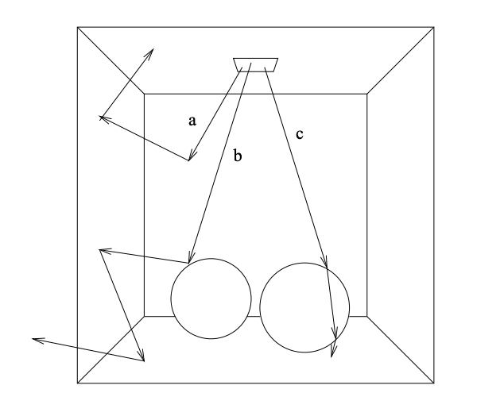To trace photons through the scene, we do something similar to ray tracing. We start by sampling a random location on the light source as well as a random direction out of the light source by using a cosine hemisphere sampler. We also compute the power of the photon by computing the power of the light and dividing that by the number of photons that we shoot out of the light source. The power of the light can be computed by R = P / (A x Ω) where R is Radiance, P is Power, A is area of the light source, and Ω is the solid angle that the light source emits into. Using this newly sampled ray, we compute its hit point with the scene. If the hit point is at a diffuse surface, we store the photon in the photon map along with its power and incoming direction.
Then, we must determine if the photon is absorbed or reflected off the surface. We do this by using Russian Roulette with a continuation probability equal to the probability of reflectance of the object that we have intersected with in order to get an unbiased estimate of the distribution of photons through the scene. The probability of reflectance is given by
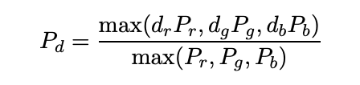where Pr, Pg, Pd is the power of the incoming photon along the red, green, and blue channel and dr, dg, db are the reflectance properties of the material. Note, that if the surface is water, we must use the Fresnel equations to compute the probability of transmission, and use this in Russian Roulette as well. If the algorithm determines that the photon is reflected or transmitted, then we recursively trace the photon in the sampled outgoing direction; otherwise, we terminate the path for that photon.
The photon map itself is stored as a balanced kd-tree because this allows us to efficiently do nearest neighbor queries in 3 dimensional space. Since the photon map is not modified in the rendering step, it is easy to construct and maintain a balanced kd-tree by taking an array of all photons after they have been generated and recursively building the tree.
This single photon map is not enough to render realistic underwater scenes. The key to rendering great looking underwater caustics is the use of a caustic photon map. The caustic photon map is a special photon map that stores photons that have only been specularly reflected. We implement this by shooting photons at the light source directly at specular surfaces and then storing the first location at which they hit a diffuse surface. Keeping a separate caustic photon map helps with the accuracy of rendering, as high density caustic photons do not need to be mixed with low density global photons during radiance estimation. Splitting the maps also decreases overall kd-tree height and therefore improves nearest neighbor lookup speeds.
In the second phase we render the image using regular path tracing with the help of the photon maps. We perform Monte Carlo sampling of outgoing radiance with Russian Roulette termination for recursively evaluating incoming radiance. However, when a camera ray hits a diffuse surface, we immediately stop the bounce recursion and instead directly estimate the outgoing radiance using nearby photons. We query for a fixed number of nearest neighbor photons, which can be thought of as a search with an adaptive radius and can be done efficiently with a kd-tree. With the assumption that those photons lie on a locally flat disk around the intersection point, we can estimate the outgoing radiance Lr as the following weighted sum of the power contributions 𝛥𝛷p of each photon:
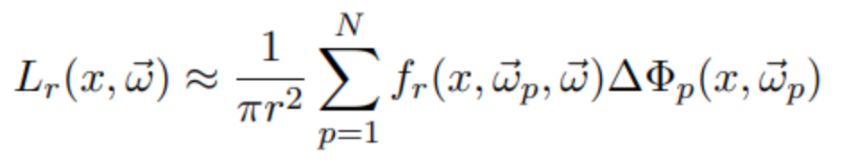Here r is the maximum distance from the intersection point to any of its N nearest neighbor photons, and 𝜔p is the incident direction of each photon.
The estimate may break down for points close to edges and corners, but the error can be reduced with additional photons in the map. This estimate is performed separately for the global and caustic photon maps, and the estimates from both are then added together. We use this estimate for both direct and indirect illumination of diffuse surfaces. With some additional computation, direct illumination could be calculated more exactly through importance sampling, though we omitted it because we were focusing primarily on caustic effects. Additionally, using the photon maps for direct illumination provides a good demonstration of the kinds of noise that this method produces, which tends to be lower frequency than that of Monte Carlo sampling.
For specular surfaces, we use path tracing as normal instead of estimating from the photon map to save on the number of photons that we would otherwise need to make a good estimate, as only photons coming in from the mirror direction would have a significant contribution in this case.
To reduce blurring in caustics associated with nearest neighbor estimates, we implemented cone filtering, which weights the contributions of nearby photons more heavily than those of faraway photons. The radiance estimate for the caustic photon map then becomes:
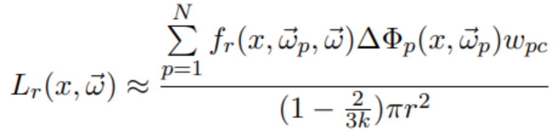 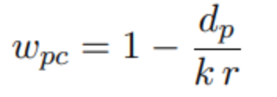Wpc is a weight for each photon derived from dp, the distance from the photon to x, and k, a filter parameter >= 1 that we set. The other variables are as before.
Generating the scenes in Blender took longer than initially planned due to unexpected bugs. For example, when we were creating the .dae files, we noticed that our initial .dae files led to overly dark scenes. We were able to solve this by moving the borders of the water to the outside of the walls and floor.
We also encountered problems in the photon tracing implementation. Initially the photons were not being properly added to the map, resulting in errors when trying to do nearest neighbor queries. After that was fixed, we then discovered that the memory locations within the photon map were inaccessible after creation. This turned out to be due to stack allocation of the photon maps, which caused their memory to be freed after the function that created the photon maps returned. Heap allocation resolved this issue. The final issue we encountered with photon tracing was infinite recursion in a photon’s bounce path. After identifying that in some cases a photon intersected with the same point over and over again, we added a small offset to the intersection check to prevent this.
A lot of time was spent attempting to figure out why our initial results were generating very weak caustics. Eventually, after playing around with the scenes and switching from the area light source to the point light source, we found that our caustics were much sharper. Unfortunately, this was only part of the solution. After a long time spent fruitlessly debugging and verifying implementations, we discovered the solution was to greatly increase the number of photons used in our photon maps, particularly the caustic photon map. Switching from tens of thousands to millions of photons achieved the necessary quality boost, making the caustics recognizable and far less blurry.
The complexity and open-endedness of this final project taught us how to research, design, and implement an idea from scratch as well as how to effectively work together in a large team. However, there are a few more specific and valuable lessons that we gained that will undoubtedly be helpful in future projects. First and foremost is how important visual debugging tools are for computer graphics projects. When debugging our photon map implementation, we ended up spending quite a bit of time writing code that would allow us to visualize the photon maps and the path of the photons through the scene. In the future, it would be important to have a very good idea of how we would debug our code and consider that as a factor when determining the project timeline. In addition, we learned that paying attention to the input is sometimes more important than debugging the code. In this project we unfortunately wasted a lot of time debugging code that was working because we thought there was a bug, when in fact there was an issue with the input scenes that we were rendering.
| 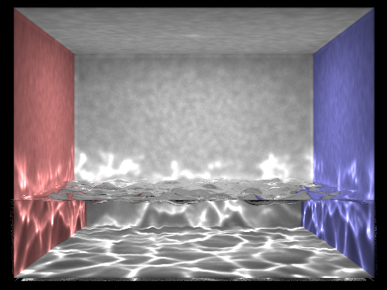 | 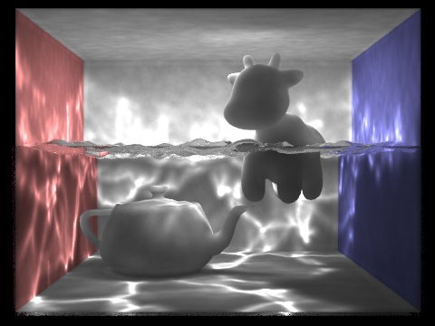 |
| 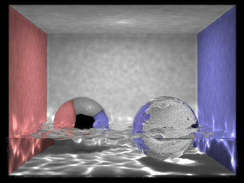 | 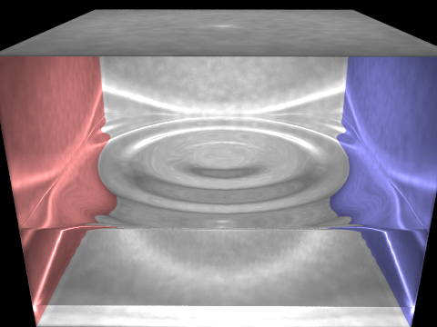 |
After experimenting with different scenes and hyperparameters of the photon mapping code, we learned some interesting things about our implementation:
| 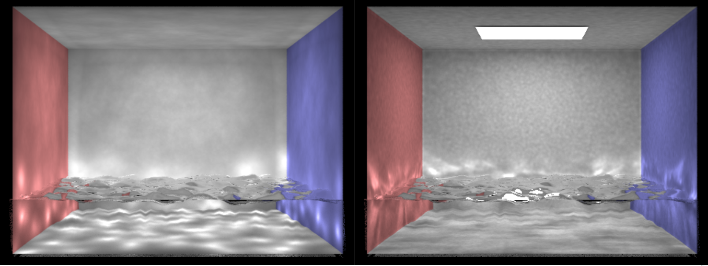 | As we see in the image below, the point light source generates much sharper caustics compared to the area light source. This is likely because the area light source more uniformly illuminates the floor of the scene compared to the point light source and as a result the contrast between caustics and non-caustics is less apparent. |
| 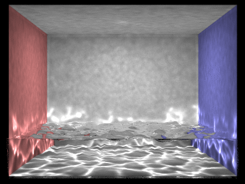 | Another interesting effect that we observed is how the caustics get farther apart from each other as the water gets closer to the light source. |
| 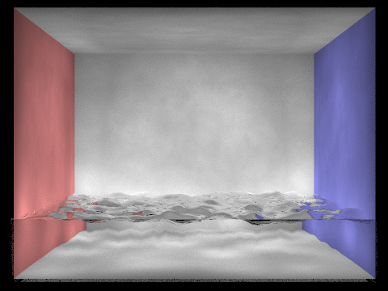 | The animation below shows various renders with an increasing number of photons. As we can see, as the number of photons increases, the caustics become much sharper. In this example we go from 20,000 photons to 1.6 million. |
| 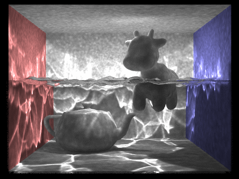 | This animation shows us how the renders change as we increase the number of photons used in each radiance calculation. As we go from 100 to 500 photons we can see that the caustics become less sharp; however, there is also less noise on the image overall. This is an interesting tradeoff that we explored when trying to render the most realistic looking images. We settled on a value of 300 photons for a majority of our renders. |
One underwater lighting effect that we would have liked to implement was god rays/shafts of light, which would’ve involved extending the photon map algorithm to handle volumetric scattering. Another possibility was to implement progressive photon mapping, a technique that does not require storing the entire photon map at once. This would help solve the issue of render quality being constrained by the amount of memory needed to store sufficiently large photon maps.
We all worked together in conducting initial research, putting together the technical design doc, and creating slides and other presentation materials. In terms of implementation, our individual contributions are as follows: